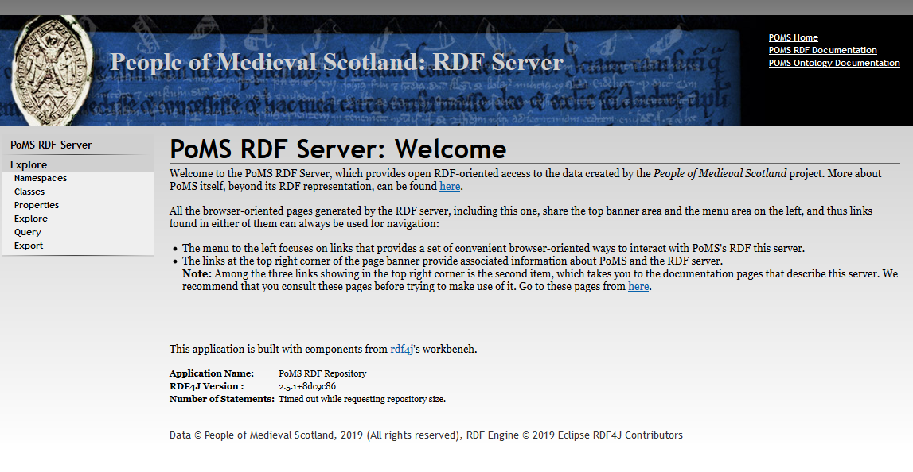
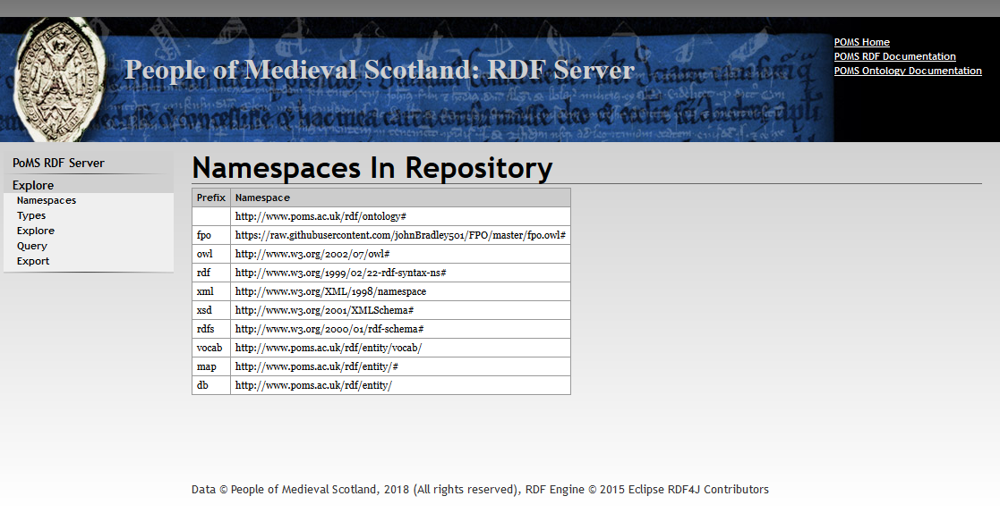
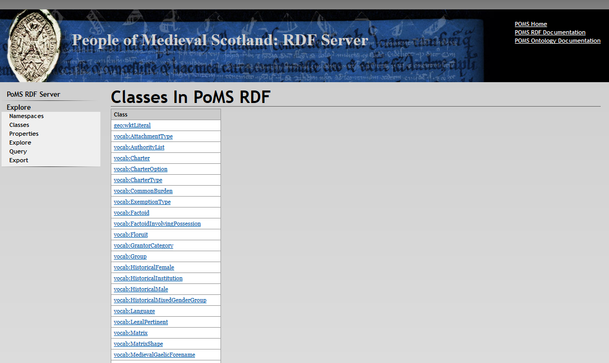
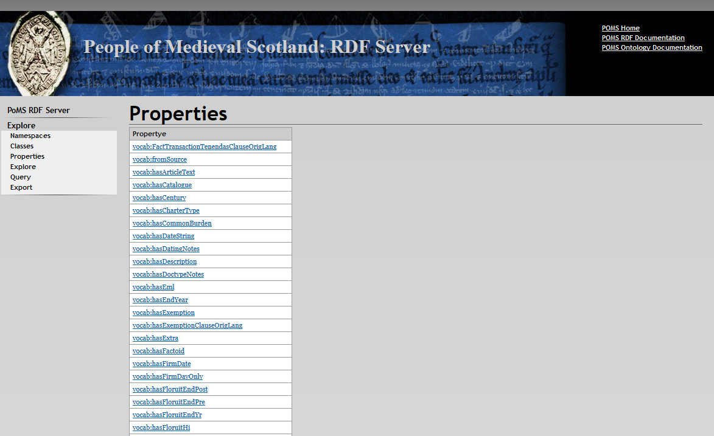
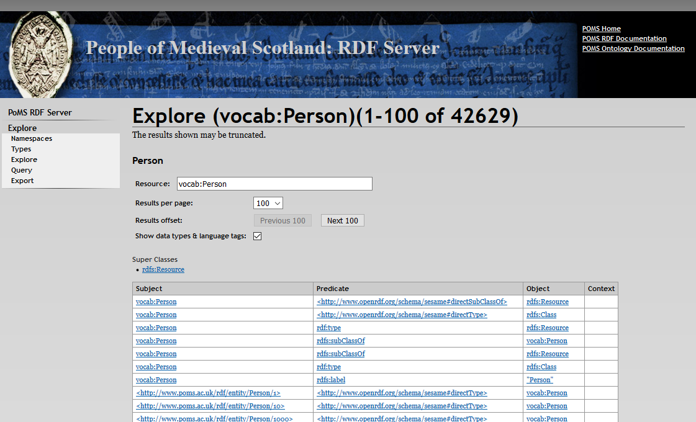
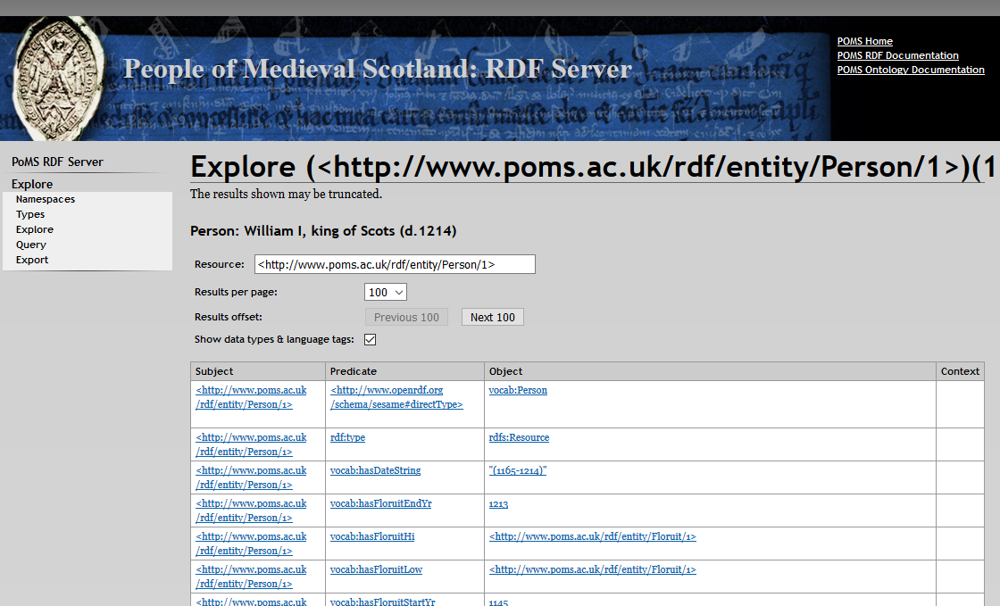
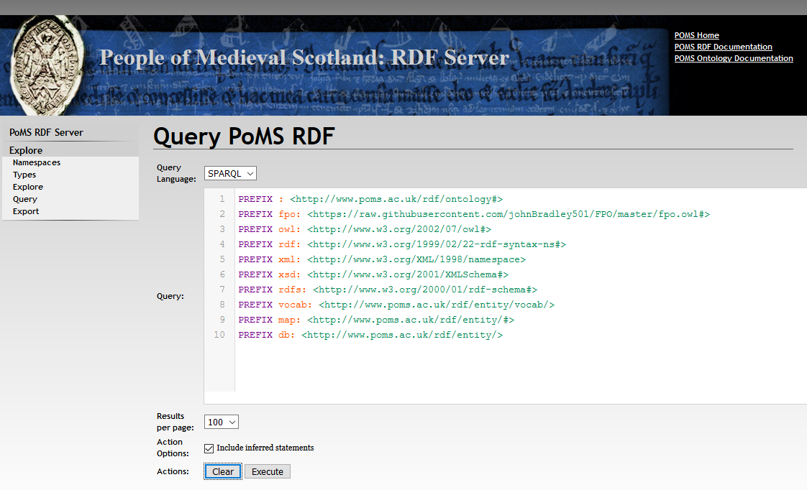
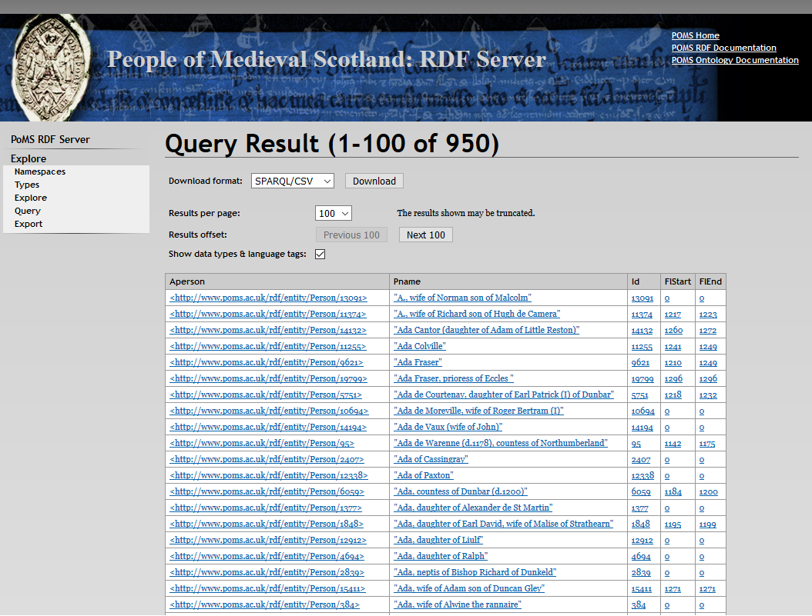
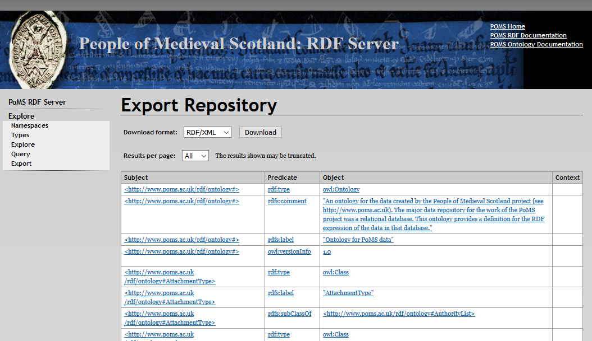

In line with Linked Open Data principles, PoMS data is available through a range of RDF services over the WWW. The server for PoMS RDF data can be found at http://www.poms.ac.uk/rdf/.
There one will find PoMS’s RDF server, which is based upon rdf4j technology in the form of a stripped down rdf4j workbench which provides read-only access to the data. When one first accesses the server one is presented with the server's Welcome page. It mainly consists of some text that welcomes you to the server. Note that it also tells you which version of rdf4j provides the basis for its operation.

There are, of course, other places to which one can navigate. First, in the top right corner are three very general links:
These links provide a very high level orientation to PoMS and its RDF representation.
Other more specifically RDF-oriented services are available from the navigation area on the left side of the page:
Before we begin, a brief note about the screenshots shown in the following material. They were all created before the final version of the data was ready, and so will vary a little from what you might see if you went and looked at the same items today.

The Namespaces display is very simple, and shows only the list of namespaces known to the PoMS dataset, with the prefix that is used within the repository for each one.

By clicking on the Classes link one is presented with the list of classes of data found in PoMS’s RDF repository. The ones with prefix “vocab:” are specific to PoMS’s own ontology, which is described in some detail here. Clicking on one of the listed classes invokes the Explore display for that specific class which, in turn, gives you access to both (i) the types “definition material”from the ontology that is available in the repository and (ii) to its specific instances. For instance, choosing “vocab:Person” generates a number of triples about the Person entity, and then this is followed by the list of Persons defined in PoMS.
Thus, the Class display, coupled with the Properties and Explore Displays (described next) provides a useful way to explore the entire PoMS repository.

By clicking on the Properties link one is presented with the list of class properties found in PoMS’s RDF repository. The ones with prefix “vocab:” are specific to PoMS’s own ontology, which is described in some detail here. Clicking on one of the listed properites invokes the Explore display for that specific property which, in turn, gives you access to both (i) the types “definition material”from the ontology that is available in the repository and (ii) to its specific instances. For instance, choosing “vocab:hasCentury” generates a number of triples about the hasCentury property, followed by the list of triples in PoMS that use the hasCentury property.

The Explore Display displays RDF statements (triples) that make reference to the thing being explored. The screen above shows the beginning of the display for “vocab:Person”. Note that all the references to other URIs in the display are blue-and-underlined. Clicking on any of them redirects the Explore display to focus on the selected item. For example, we can see here the first of the Persons in PoMS, identified as http://www.poms.ac.uk/rdf/entity/Person/1. Clicking on that redirects the Explore display to look at the materials directly connected to this person:

This is the beginning of the resulting display, and you can see some of the materials asserted for Person/1, who happens to be William I, king of Scots (d.1214).
There are often a good number of RDF statements that make reference to any of the objects in the repository. Hence, the Explore display uses a pagination mechanism to group the full list into several different pages. The buttons identified as “Results offset” allow you to move through the pages of results. In addition, you can control how many items make up a display page by changing the results per page item. You can also redirect the display to a different URI by entering it into the Resource field and pushing the Enter key.
I have found the Explore mechanism to be a really useful way to explore the PoMS dataset as RDF data, and recommend that you work with it to get a feel for the data before you attempt to create a SPARQL query.

The query display allows one to run a SPARQL (or alternatively the rather more specialised SeRQL) query against the PoMS Repository. Here is a query that selects all women in PoMS and displays their URIs, their names, their ID number and their floruit dates:
PREFIX vocab: <http://www.poms.ac.uk/rdf/entity/vocab/>
select ?aperson ?pname ?id ?flStart ?flEnd
where {
?aperson a vocab:HistoricalFemale;
vocab:hasID ?id;
vocab:hasPersonDisplayName ?pname;
vocab:hasFloruitStartYr ?flStart;
vocab:hasFloruitEndYr ?flEnd.
}
order by ?pname
If this was put into the query box, and then the Execute button was pushed, one would see:

This server’s Query mechanism paginates results, so only the first 100 women are shown on the first screen, although one can proceed to the next page by pushing the “Next 100” button. Note that pieces of information here are displayed as links which present material in the Explore framework. Thus clicking on a person’s URI (first column) will get access to information about them.
Tabular data of the kind created by SPARQL select statements can be exported for further processing in several different formats: CSV, TSV, JSON, and SPARQL’s “binding” XML format (https://www.w3.org/TR/rdf-sparql-XMLres/). Choose the format you want from the Download format dropdown box, and push the Download. CSV and TSV are particularly well suited to import into a spreadsheet. There are other mechanisms to get data directly from a SPARQL query rather than through this web-page mechanism described below in the section "PoMS rdf SPARQL Endpoint".
PoMS’s rdf4j SPARQL processor supports all data selection and retrieval formats including “select”, “construct”, “describe” and “ask”. SPARQL based data updating mechanisms are, of course, not supported! Construct and Describe queries create sets of RDF triples, and they can be exported in various RDF forms such as RDF-XML, Turtle and JSON, plus others.

The Export Display is a mechanism provided to allow you to fetch the entire set of PoMS triples. Note the choices for data formats: RDF-XML, Turtle, N3, RDF-JSON, TriG, N-Quads, Binary RDF, TriX and JSON-LD.
The mechanisms described above all operate directly with an RDF repository, but are still mediated through light weight presentational HTML pages. However, PoMS’s rdf service can also operate directly in RDF data formats without HTML representation as an intermediary. There are two mechanisms provided:
URIs provide the central mechanism for representing all data
entities in PoMS’s RDF. Hence, although in the browser-based PoMS web app only
certain kinds of PoMS data have associated URIs — persons, for example; in the
PoMS’s RDF representation, all PoMS entities possess URIs that identify them.
They all begin http://romanrepublic.ac.uk/rdf/entity/, and are then
followed by the name of the type of entity they represent followed by a slash
and the specific instance identifier — either a number or sometimes a name.
Thus http://www.poms.ac.uk/rdf/entity/Person/1
is the URI for a specific person (William I, king of Scots (d.1214),
mentioned earlier), http://romanrepublic.ac.uk/rdf/entity/TitleType/10
is the URI for the office of chancellor, and http://www.poms.ac.uk/rdf/entity/Gender/4 is the URI for the gender of Female.
It might at first seem unfortunate that these URIs are different in form from the RESTful URLs used in PoMS’s browser-oriented framework created outside of the RDF server to identify data about, say, a person. However, technical considerations seemed to make this in fact desirable, and one way to interpret this difference semantically is to consider the PoMS RDF-entity URI as the Linked Data URI identifier for the person, and the corresponding web-app URL that brings up the page about the person as the URI for the web document about the person.
All of PoMS’s RDF-based URIs can be passed to the WWW as URLs from anywhere in the world and (as a natural consequence of the way the http protocol and WWW works) will be directed to the PoMS RDF Server, where they will be interpreted as requests for data about the particular entity, thus conforming to Bizer, Heath and Berners-Lee’s 3rd principle of Linked Data. As their 3rd principle suggests, the data will be delivered as RDF. However, RDF can be expressed in several different forms, and the form in which the RDF data is returned can be controlled by the HTTP header “Accepts” (see the list of recognised mimetypes below). Thus, the server will respond with the HTML pages (from PoMS/rdf4j’s “Explore” format) if the request comes from a conventional web browser which will be stating that it accepts HTML. However, if the request comes with a recognized RDF data mime type specified in the HTML Accept header, then the data will be delivered in that format.
To assist users who wish to use a browser as the way to send a PoMS URI entity to the server, but want data back directly rather than through an intermediate HTML page, one can specify the format parameter, e.g.:
http://romanrepublic.ac.uk/rdf/entity/CharterType/19?format=application%2Fxml
The value of the format parameter should be the required mime type for the appropriate format for the rdf data. Here, the XML format for RDF was requested, and the user will receive data that starts like this:
<?xml version="1.0" encoding="UTF-8"?> <rdf:RDF> <!-- This data is Copyright © People of Medieval Scotland, 2018 (All rights reserved), and is made available under the Creative Commons License 'Attribution-NonCommercial 4.0 International (CC BY-NC 4.0)' --> <rdf:Description rdf:about="http://www.poms.ac.uk/rdf/entity/CharterType/19"> <directType rdf:resource="http://www.poms.ac.uk/rdf/entity/vocab/CharterType"/> <rdf:type rdf:resource="http://www.w3.org/2000/01/rdf-schema#Resource"/> <hasID rdf:datatype="http://www.w3.org/2001/XMLSchema#integer">19</hasID> <hasName rdf:datatype="http://www.w3.org/2001/XMLSchema#string">Memorandum</hasName> <rdf:type rdf:resource="http://www.poms.ac.uk/rdf/entity/vocab/CharterType"/> <label rdf:datatype="http://www.w3.org/2001/XMLSchema#string">CharterType: Memorandum</label> </rdf:Description> <rdf:Description rdf:about="http://www.poms.ac.uk/rdf/entity/Charter/1539"> <hasCharterType rdf:resource="http://www.poms.ac.uk/rdf/entity/CharterType/19"/> </rdf:Description> <rdf:Description rdf:about="http://www.poms.ac.uk/rdf/entity/Charter/1750"> <hasCharterType rdf:resource="http://www.poms.ac.uk/rdf/entity/CharterType/19"/> </rdf:Description> <rdf:Description rdf:about="http://www.poms.ac.uk/rdf/entity/Charter/2234"> <hasCharterType rdf:resource="http://www.poms.ac.uk/rdf/entity/CharterType/19"/> </rdf:Description> <rdf:Description rdf:about="http://www.poms.ac.uk/rdf/entity/Charter/2236"> <hasCharterType rdf:resource="http://www.poms.ac.uk/rdf/entity/CharterType/19"/> </rdf:Description> [...]
Format=rdf is also recognised as a request for rdf data directly, and will cause the application to generate RDF in the Turtle format.
The accepted mime types accepted by the PoMS rdf server are those supported by rdf4j. For the various RDF data formats these are:
See rdf4j documentation about the mime types and rdf formats it accepts at http://docs.rdf4j.org/javadoc/2.0/org/eclipse/rdf4j/rio/RDFFormat.html
One can run SPARQL queries using the browser-oriented environment, as described above, and one receives results wrapped in some light-weight HTML presentation. However, the PoMS server also supports a more data-oriented SPARQL Endpoint service where one can submit a SPARQL query and get back the results directly in a data-oriented format — tuples or RDF statements — rather than mediated through HTML pages.
The SPARQL Endpoint is available at:
http://www.poms.ac.uk/rdf/endpoint
and follows a somewhat stripped down version of the SPARQL Endpoint guidelines described at https://www.w3.org/TR/sparql11-protocol/, in that it supports only the query operations (not update), and within that only queries via GET or query via POST with parameters.
Thus, the SPARQL query must be
provided using the query string parameter (as described in section 2.1
of the Sparql 1.1 Protocol.?The default-graph-uri and named-graph-uri parameters
specified in the protocol are not supported and are ignored if provided, since
RDF data is not structured in terms of named graphs.
The PoMS rdf SPARQL Endpoint also supports a format parameter which can be used to specify what format should be used to generate results. It can be used when it is not convenient to use the HTTP request header Accepts mechanism, described below.
You can use your http request "Accepts" header to tell this SPARQL endpoint processor what format to use generate its results. The possible result formats depend on the type of query run. If the query generates RDF statements (construct and describe) the formats available are those listed in the section Mime Types for RDF formats, above. If the query generates tabular data (select), the formats, with their mime types, that are available are:
I have created a demo called mapapp which shows how the PoMS SPARQL endpoint might be used in practice. In the demo a Python script submits a query displaying geographic data against the PoMS data, and processes the resulting data it receives from the RDF server into an interactive map generated as an HTML page using the Leaflet toolkit. You can find the materials for this demo here.